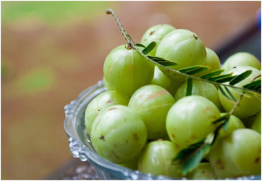

আমলকীর পরিচিতি
আমলকী এক প্রকার ভেষজ ফল। সাধারনত আগস্ট থেকে নভেম্বর মাস পর্যন্ত এই ফল দেখতে পাওয়া
যায়। সংস্কৃত ভাষায় এই ফলকে বলা হয় আমালিকা।
আমলকী গাছের উচ্চতা ৮-১৮ মিটার পর্যন্ত হয়ে থাকে। পাতা ২ ইঞ্চি লম্বা হয় আর পাতার রঙ
হালকা সবুজ। আমলকী ফল গোলাকৃতি, রঙ হালকা সবুজ। বাংলাদেশের প্রায় সব অঞ্চলেই আমলকীর গাছ
দেখতে পাওয়া যায়। গাছের বয়স ৪-৫ বছর হলেই গাছ থেকে ফল পাওয়া যায়। বাংলাদেশ ছাড়াও
ভারত,মায়ানমার, শ্রীলঙ্কা , মালয়শিয়া ও চীনে আমলকী পাওয়া যায়।

বিভিন্ন অসুখ সারানো ছাড়াও রোগ প্রতিরোধ ক্ষমতা গড়ে তুলতে আমলকী দারুন সাহায্য করে।
আমলকী অ্যানিমিয়া,জ্বর,ইনসমেনিয়া, বদহজম ও ইউরিনের নানা সমস্যা সারাতে জাদুর মতো কাজ
করে। আমলকীর নানা গুনের কারনে আয়ুর্বেদিক ওষুধেও আমলকীর নির্যাস ব্যবহার করা হয়।
আমলকীর পুষ্টি উপাদান
প্রতি ১০০ গ্রাম আমলকীতে থাকে: ভিটামিন সি থাকে ৪৬৩ মিলিগ্রাম, শর্করা ১৬.২ গ্রাম, আঁশ ৩.৪ গ্রাম, খাদ্যশক্তি ৭০ কিলোক্যালরি, ক্যালরি ৩২ কিলোক্যালোরি, ক্যারোটিন ৪৭০০ মিলিগ্রাম, ক্যালসিয়াম ৩২ মিলিগ্রাম, পানি ৯১.৪ গ্রাম, খনিজ পদার্থ ০.৭ গ্রাম, প্রোটিন ০.৯ গ্রাম, ক্যালসিয়াম ৩৪ গ্রাম, আয়রন ১.২ মিগ্রা, ভিটামিন বি১- ১০.০২ মিগ্রা, ভিটামিন২- ২০.০৮। অন্য যে কোন ফলের চেয়ে আমলকীতে ভিটামিন সির পরিমাণ দ্বিগুণ থেকে ১০০গুণও বেশি থাকে। এছাড়াও রয়েছে ভিটামিন প্রচুর পরিমাণে এ্যান্টিঅক্সিডেন্ট উপাদান সহ রয়েছে ট্যানিন, লিপিড ও বিভিন্ন জৈব এসিড।
আমলকীর উপকারীতা
১)আমলকী চুলের টনিক হিসেবে কাজ করে এবং চুলের পরিচর্যার ক্ষেত্রে এটি একটি গুরুত্বপূর্ণ
উপাদান। এটি কেবল চুলের গোড়া মজবুত করে তা নয়, এটি চুলের বৃদ্ধিতেও সাহায্য করে।
২)এটি চুলের খুসকির সমস্যা দূর করে ও পাকা চুল প্রতিরোধ করে।
৩)আমলকীর রস কোষ্ঠকাঠিন্য ও পাইলসের সমস্যা দূর করতে পারে। এছাড়াও এটি পেটের গোলযোগ ও
বদহজম রুখতে সাহায্য করে।
৪)এক গ্লাস দুধ বা পানির মধ্যে আমলকী গুঁড়ো ও সামান্য চিনি মিশিয়ে দিনে দু'বার খেতে
পারেন। এ্যাসিডেটের সমস্যা কম রাখতে সাহায্য করবে।
৫)আধা চূর্ণ শুষ্ক ফল এক গ্লাস পানিতে ভিজিয়ে খেলে হজম সমস্যা কেটে যাবে। খাবারের
সঙ্গে আমলকীর আচার হজমে সাহায্য করে।
৬)প্রতিদিন সকালে আমলকীর রসের সঙ্গে মধু মিশে খাওয়া যেতে পারে। এতে ত্বকের কালো দাগ
দূর হবে ও ত্বকের উজ্জ্বলতা বাড়বে।
৭)আমলকীর রস দৃষ্টিশক্তি বাড়াতে সাহায্য করে। এছড়াও চোখের বিভিন্ন সমস্যা যেমন চোখের
প্রদাহ। চোখ চুলকানি বা পানি পড়ার সমস্যা থেকে রেহাই দেয়।
৮)আমলকী চোখ ভাল রাখার জন্য উপকারী। এতে রয়েছে ফাইটো-কেমিক্যাল যা চোখের সঙ্গে জড়িও
ডিজেনারেশন প্রতিরোধ করতে সাহায্য করে।
৯)এছাড়াও প্রতিদিন আমলকির রস খেলে নিঃশ্বাসের দুর্গন্ধ দূর হয় এবং দাঁত শক্ত থাকে।
১০) আমলকীর টক ও তেতো মুখে রুচি ও স্বাদ বাড়ায়। রুচি বৃদ্ধি ও খিদে বাড়ানোর জন্য
আমলকী গুঁড়োর সঙ্গে সামান্য মধু ও মাখন মিশিয়ে খাওয়ার আগে খেতে পারেন।
১১) রোগ প্রতিরোধ ক্ষমতা বাড়ায় এবং মানসিক চাপ কমায়।
১২) কফ, বমি, অনিদ্রা, ব্যথা-বেদনায় আমলকী অনেক উপকারী।
১৩) ব্রঙ্কাইটিস ও এ্যাজমার জন্য আমলকীর জুস উপকারী।
১৪) শরীর ঠাণ্ডা রাখে, শরীরের কার্যক্ষমতা বাড়িয়ে তোলে, পেশী মজবুত করে।
১৫) এটি হৃদযন্ত্র, ফুসফুসকে শক্তিশালী করে ও মস্তিষ্কের শক্তিবর্ধন করে। আমলকীর আচার
বা মোরব্বা মস্তিষ্ক ও হৃদযন্ত্রের দুর্বলতা দূর করে।
১৬) শরীরের অপ্রয়োজনীয় ফ্যাট ঝরাতে সাহায্য করে।
১৭) লোহিত রক্তকণিকার সংখ্যা বাড়িয়ে তুলে দাঁত ও নখ ভাল রাখে।
১৮) এর এ্যান্টিঅক্সিডেন্ট উপাদান ফ্রি র্যাডিকালস প্রতিরোধ করতে সাহায্য করে।
বুড়িয়ে যাওয়া ও সেল ডিজেনারেশনের অন্যতম কারণ এই ফ্রি র্যাডিকালস।
১৯) সর্দি-কাশি, পেটের পীড়া ও রক্তশূন্যতা দূরীকরণে বেশ ভালো কাজ করে।
২০) ব্লাড সুগার লেভেল নিয়ন্ত্রণে রেখে ডায়াবেটিস প্রতিরোধ করতে সাহায্য করে।
কোলেস্টেরল লেভেলেও কম রাখাতে যথেষ্ট সাহায্য করে।